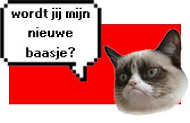

De Poezenboot, een uniek drijvend opvangcentrum voor katten, sinds 1966 een redding voor katten in nood. Hier vinden verwaarloosde, verlaten en afgestane katten een veilige haven waar ze liefdevol worden verzorgd en voorbereid op een nieuw thuis. Dit bijzondere asiel, gelegen op het water in Amsterdam, draait volledig op de toewijding van vrijwilligers, die het hart van deze organisatie vormen. Onlangs onderging de boot een grondige transformatie om volledig duurzaam te worden, waarmee het niet alleen de katten maar ook het milieu ondersteunt. Zo zet De Poezenboot koers naar een groene toekomst voor mens, dier en stad.
Dit unieke asiel draait volledig op de inzet van vrijwilligers en is volledig afhankelijk van donaties. Helaas ontvangt De Poezenboot geen overheidssteun. Alle essentiële zorg voor de katten, zoals castraties, vaccinaties, chipregistraties en andere medische behandelingen, wordt door het asiel zelf geregeld. Dankzij deze zorg krijgen de katten een nieuwe kans op een gezond en gelukkig leven. Wil je helpen? Steunen kan eenvoudig met een donatie via hun website!